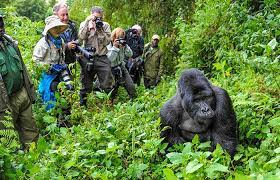
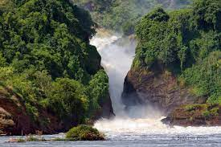
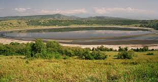
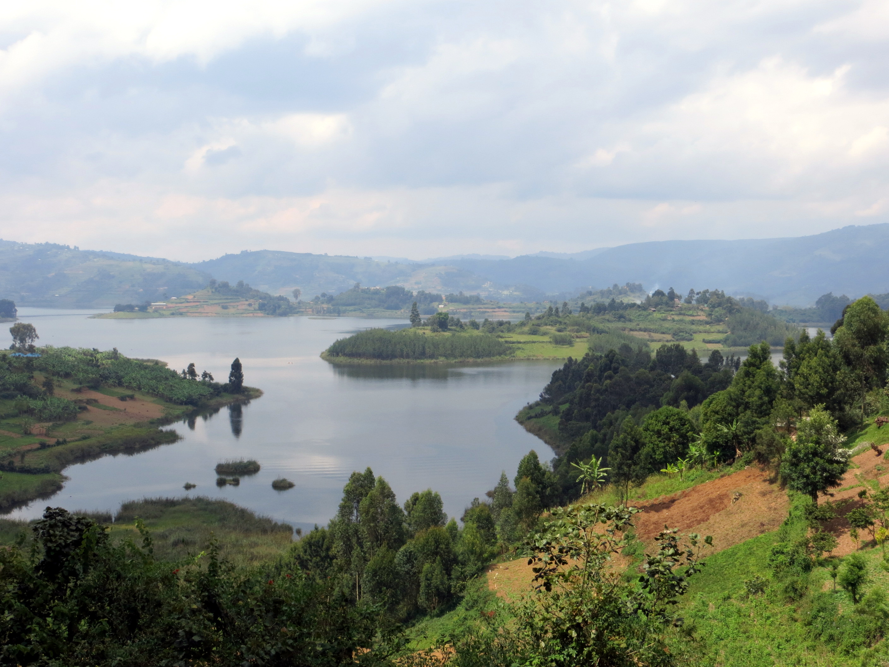

Top Attractions in Uganda
Bwindi Impenetrable National Park
Bwindi Impenetrable National Park is a UNESCO World Heritage site and home to over half of the world's remaining mountain gorillas. Visitors can go on guided gorilla trekking tours to see these magnificent creatures up close.
Murchison Falls National Park
Murchison Falls National Park is Uganda's largest national park and home to an abundance of wildlife, including elephants, lions, and hippos. The park is named after the dramatic Murchison Falls, where the Nile River plunges 45 meters over a cliff.
Queen Elizabeth National Park
Queen Elizabeth National Park is located in western Uganda and is known for its diverse wildlife, including chimpanzees, elephants, and leopards. Visitors can go on game drives, boat cruises, and nature walks to see the park's flora and fauna.
Lake Bunyonyi
Lake Bunyonyi is a stunning freshwater lake surrounded by rolling hills and terraced farms. Visitors can go on boat tours, swim in the lake's clear waters, or simply relax and take in the breathtaking views.